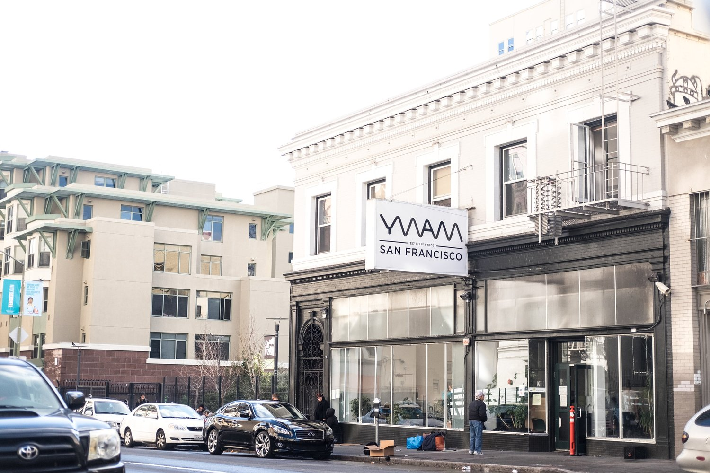

BY Timothy Svoboda
Christmas is a time when we reflect on the greatest miracle that God became a man. Miracles still happen as God breaks into our world. Let me recount our miracle story here at YWAM San Francisco.
Our journey over the last 2 years in purchasing the YWAM building at 357 Ellis street has been nothing short of supernatural.
On May 14, 2014 we got the call that the building we had leased for 20 years was being sold to a real estate speculator who would tear it down. If we didn’t match his cash offer of $4 million in 60 days time we were out!
In those short 60 days God brought in $ 1.4 million as we cried out to Him and his people through some amazing ways.
A homeless man walked in our building and said word was on the street that YWAM was losing their building. He emptied his pocket and gave us all of the 3 dollars he had to help purchase the building. Our hearts were humbled, inspired and prayer increased even more.
People started sending money from Moscow, Chile, Argentina, Europe, India, Australia, New Zealand and from all over the US.
Prayer and faith kept rising even more.
Some gifts were large and many of them were small. The smallest gift came from the Sarawak Malaysia. A precious donor sent 86 cents. After PayPal took their cut it was 56 cents. That little gift meant the world to us.
An anonymous donor passed a cashiers check to me through others while I was attending an event. On the envelope it said, “Don’t ask me for anymore money and please send a tax deductible receipt.” The check was for $ 150,000 dollars from a person we had only met briefly 7 years earlier!
All those gifts added up to $ 1.2 million dollars. That is amazing but it was not enough. We needed 4 million and the 60 days was coming up quickly. Just in the nick of time a business man provided for us a $ 2.8 million bridge loan to close the deal and put the properties in our hands!
We have since found a bank loan and repaid the business man. We now owe just $2,090,000 and paying it down every month through the help of people like you.
Through His miracle, God has rooted us in these buildings, in the middle of San Francisco. We are excited to continue serving the Tenderloin neighborhood, and are continuing to work to expand our ministries here and throughout the city. This year we hosted Calling All Skaters, a ministry out of LA, and are excited to be partnering with them as they seek to reach the skating community for Christ. Join us in prayer as we look to expanding into more ministries here in the Tenderloin as well as across the Bay area.
Would you consider a year end gift of whatever amount that will go directly to paying off these properties where so much of God’s work is being done in a neighborhood so close to His heart? Visit ywamsanfrancisco.org/give and join us as God continues to write this miracle in our hearts and lives.